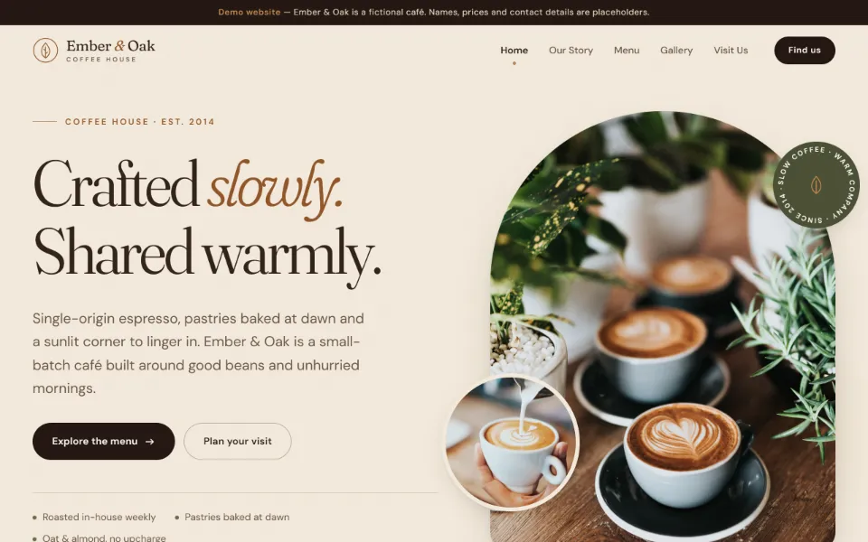
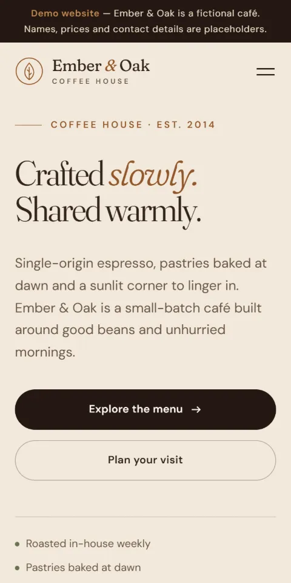

Concept project — not client work
Ember & Oak Coffee House
A five-page website for a fictional neighbourhood café, created to show how a small hospitality business could present its story, menu, photos and opening hours online. Names, prices and contact details on the site are placeholders.
What’s inside
- A menu in five tabbed categories, usable by mouse, touch or keyboard
- A photo gallery with a lightbox that supports keys and swipe
- Opening hours with a live “open now” or “closed” status
- A mobile menu that keeps keyboard focus inside and closes with Escape
- Responsive WebP photos and motion that respects reduced-motion settings